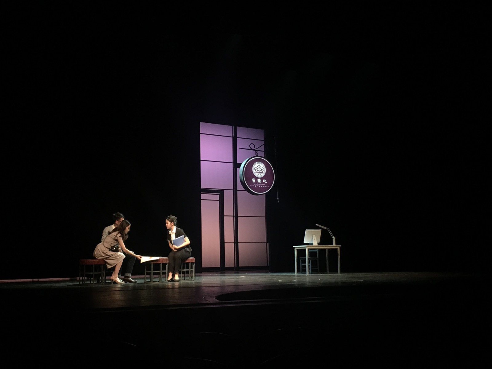
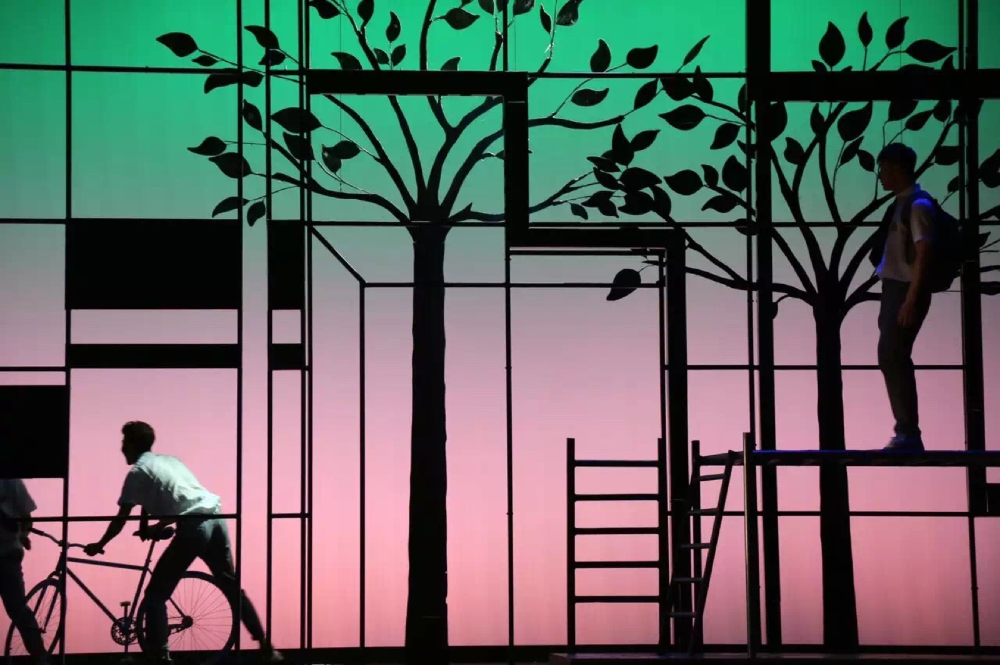
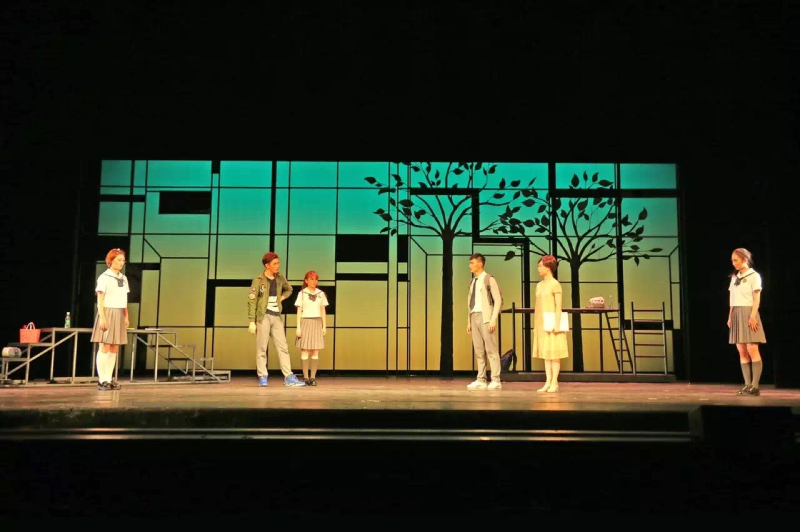
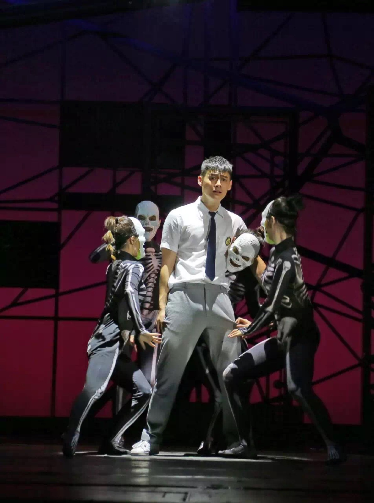
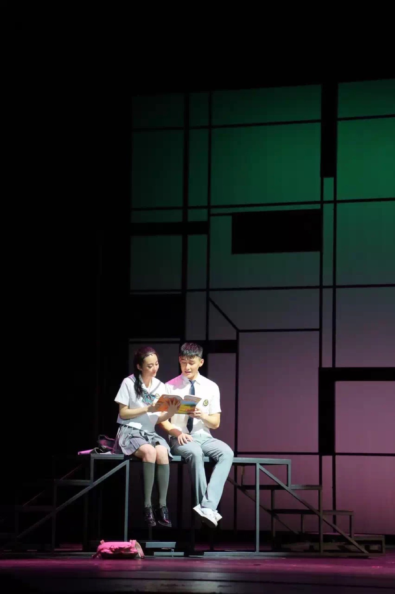
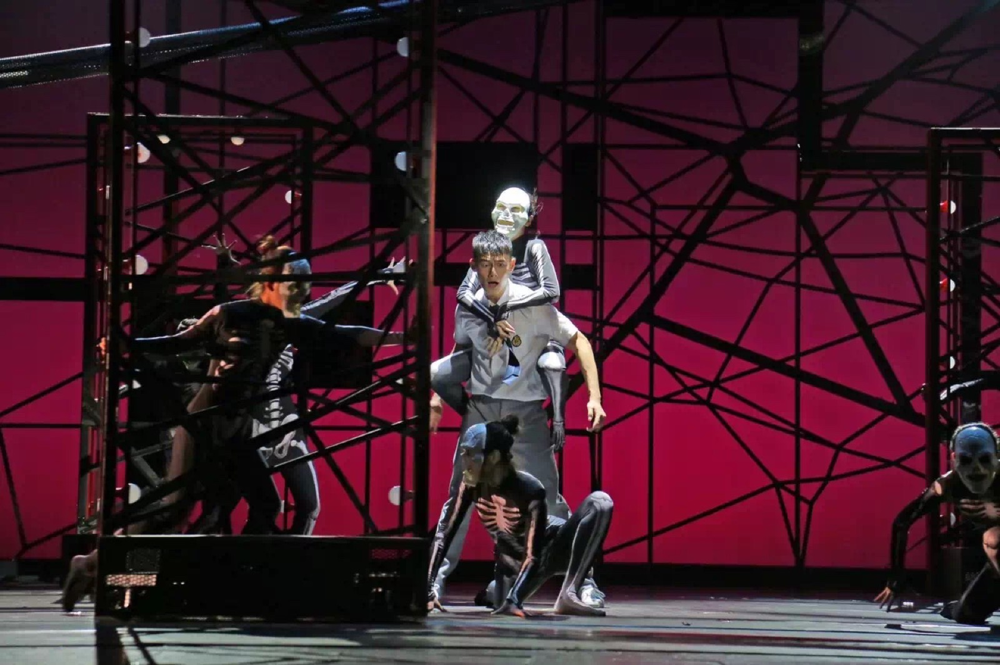
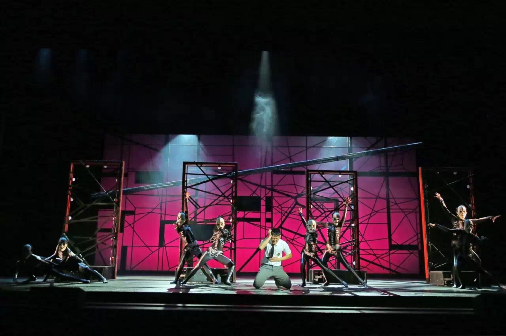
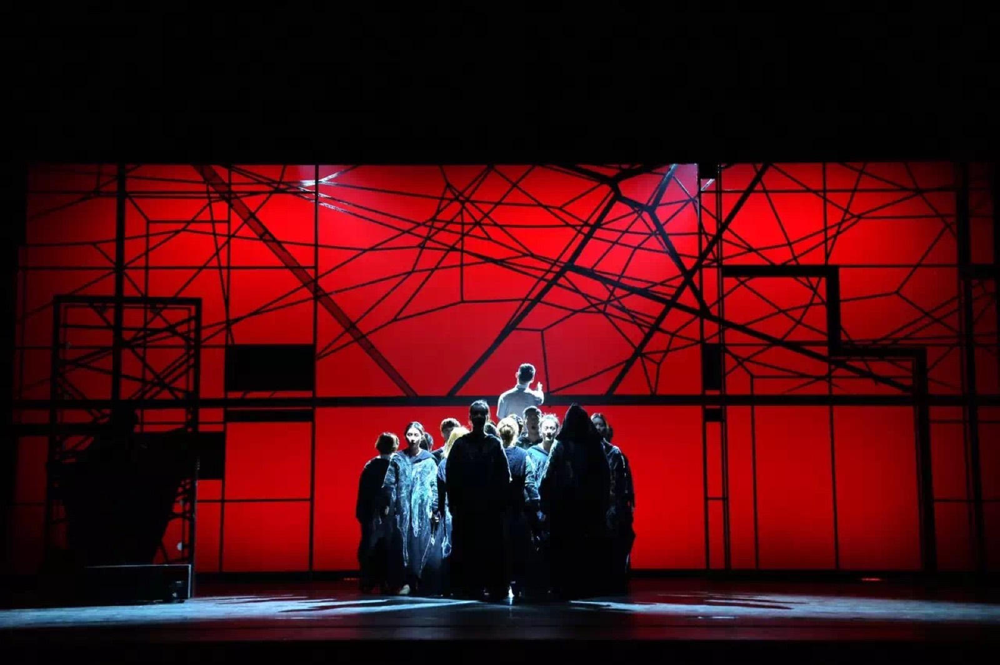
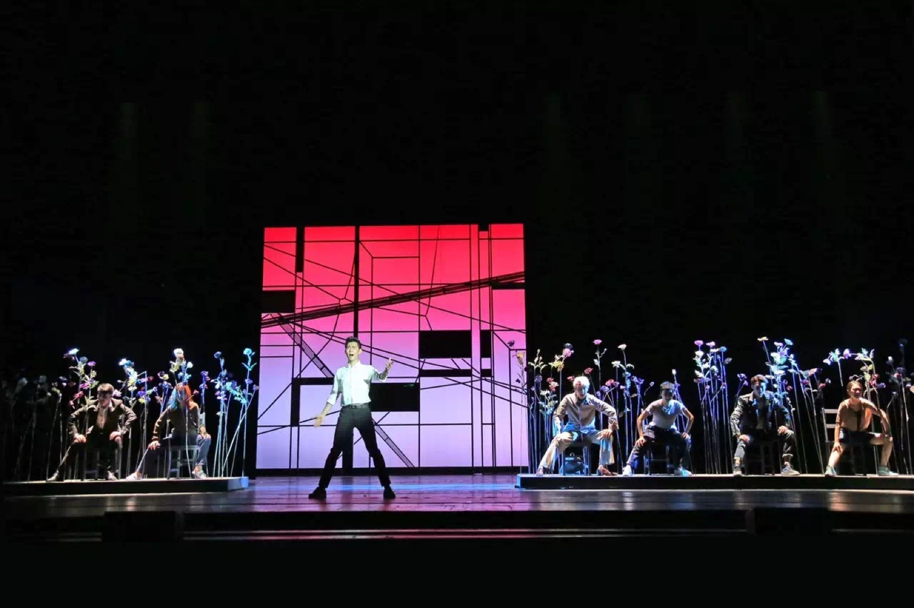
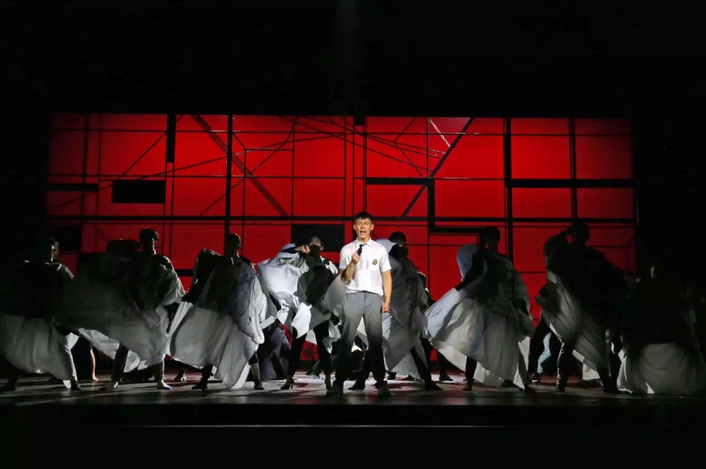

禁毒主题音乐剧《临界》 On the Edge: A Musical on Drug Prevention 2016｜中央戏剧学院 × 北京市禁毒教育基地管理中心 联合出品
“One step away is the edge.”
On the Edge was part of the 2016 Campus Anti-Drug Theatre Programme of the University Alliance for Drug Prevention Education, co-produced by The Central Academy of Drama and the Beijing Anti-Drug Education Base Management Centre. The Academy had launched The Night and the Lamplighter in 2014 and Out of Body in 2015 under its idea of “drug prevention through culture.” On the Edge was the first musical in the series to explore drug prevention. To create the piece, the team visited the Beijing Anti-Drug Education Base, attended lectures by drug prevention experts, and drew on real cases handled by Beijing's anti-drug police.
The story follows Xiaohui, a secondary-school student with a gift for painting. After family upheaval, misunderstandings with classmates, and a friend's betrayal, he is left without help or support and falls into drug use. Solos, ensembles, and group dance bring his inner struggle to the surface. At the end, the narrator invites the audience to discuss whether the story could have ended differently, and what each of us might do to change it.











The musical premiered in June 2016 and had six performances at the Experimental Theatre of The Central Academy of Drama and the Dongtu Theatre. A video version and a teaching film about the director's notes were also produced. In 2017, On the Edge received Second Prize in the Drama category of the 15th China Population Culture Awards. It is one of six anti-drug productions jointly created by the Beijing police and The Central Academy of Drama. Over the years, the series has reached more than ten million people through public performances and recordings distributed to schools and community organisations.